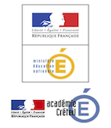
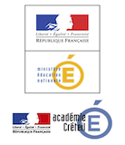
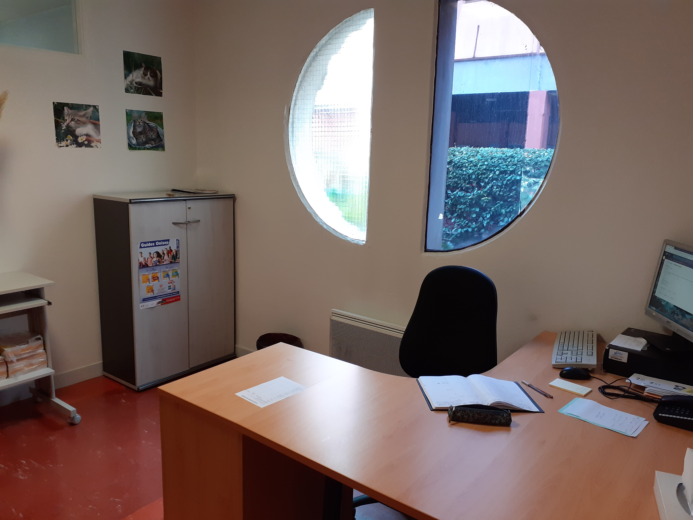

La psychologue
"Mme Lévy, Psychologue de l'Education Nationale spécialisée en « Education, Développement et conseil en Orientation scolaire et professionnelle » (EDO) a pour rôle de: -Favoriser la réussite et l’investissement scolaire de tous les élèves. -Accompagner les élèves rencontrant des difficultés, en situation de handicap ou en risque de rupture scolaire. En fonction de la situation le Psy EN réalise des bilans psychologiques avec l’accord des familles. -Aider les élèves à définir son projet d’avenir à partir de ses centres d’intérêts, compétences et situation personnelle."
Je suis présente au collège le jeudi matin de 9h00 à 12h30 et le mardi une semaine sur 2.
Vous pouvez prendre rendez-vous auprès de Madame FOURMY si vous souhaitez me rencontrer.
Mme Carole LEVY
Psychologue de l'Education Nationale
Centre d'Information et d'Orientation de Boissy
3 avenue Charles de Gaulle, 94470 Boissy Saint Léger
01 45 69 65 73